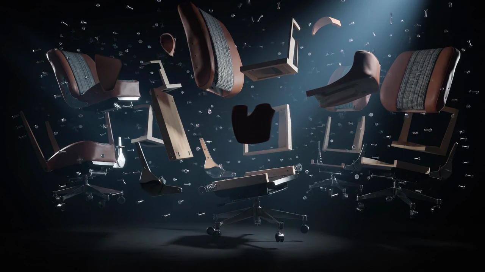
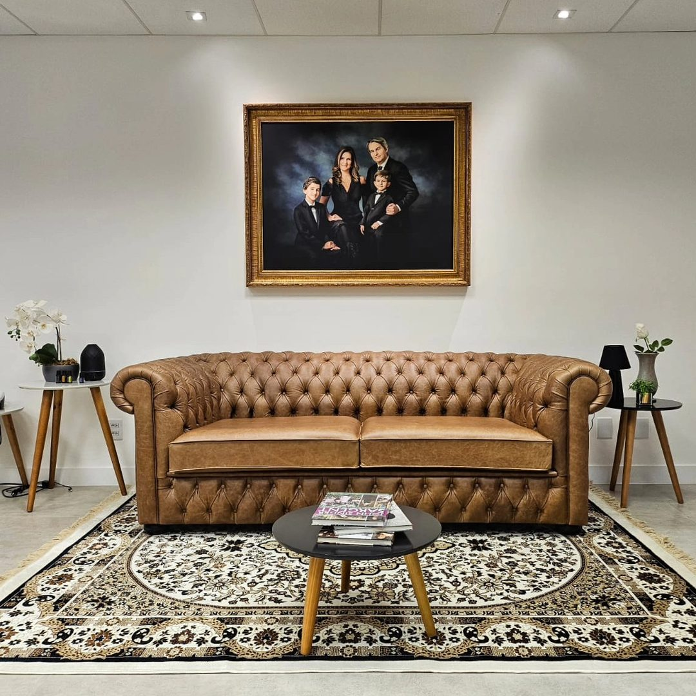
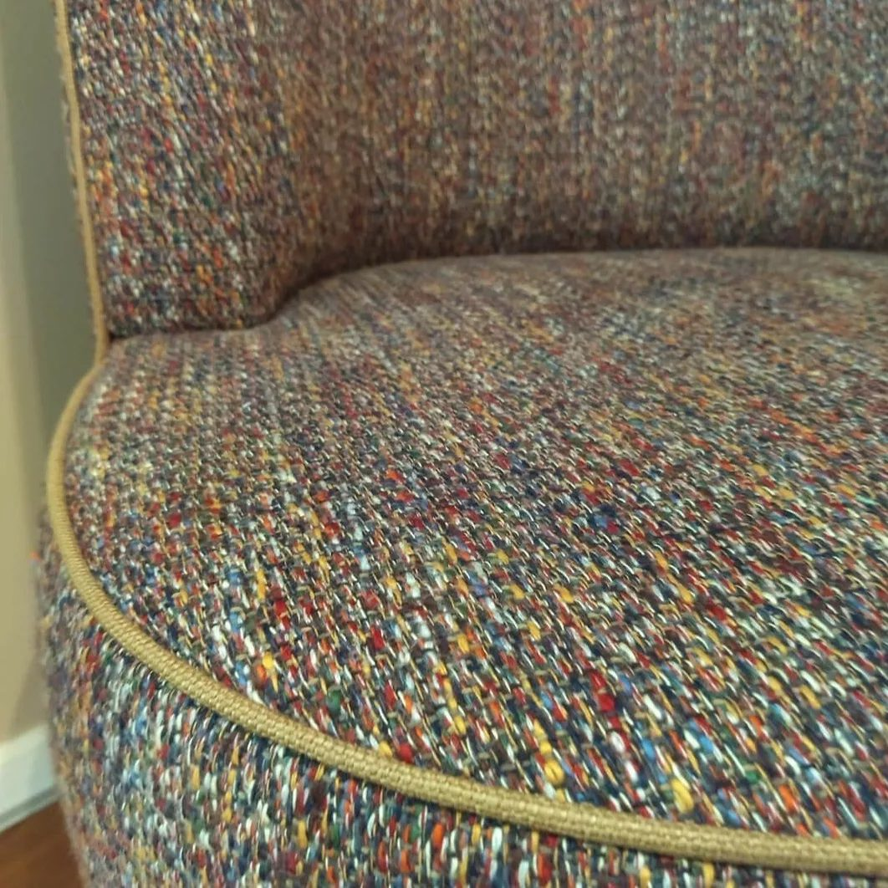
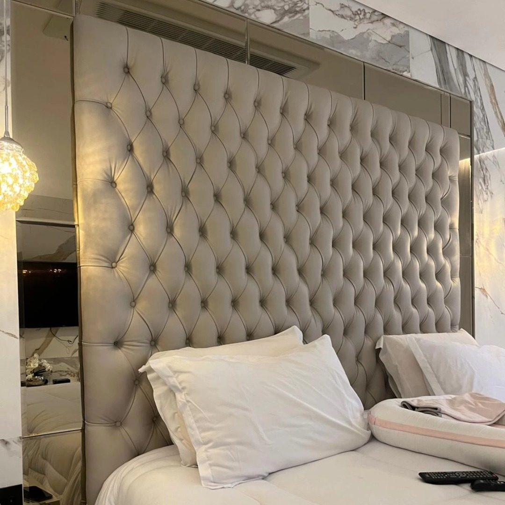

Reforma de estofados de luxo
Sofás, poltronas e peças assinadas. Tecidos nobres, couro legítimo, troca de espuma e acabamento de ateliê — inclusive sofá retrátil e reclinável de alto padrão.
Ateliê de tapeçaria premium · São Paulo
Peças únicas feitas com ofício, não solução rápida.
Para residências, arquitetos e designers de interiores — além de projetos náuticos e automotivos de luxo.
Manifesto
Peças com história merecem ofício.
Criamos o novo — e redesenhamos o que já existe.
O ateliê

A InovArt é um ateliê de tapeçaria premium em São Paulo com mais de 25 anos de ofício. Criamos móveis e peças únicas de tapeçaria sob encomenda, reformamos mobiliário de alto padrão e restauramos peças clássicas.
Atendemos residências de luxo, condomínios de altíssimo padrão e projetos de arquitetura — em regiões como Alphaville, Jardins, Morumbi, Itaim Bibi e Vila Nova Conceição — com curadoria de tecidos nobres e acabamento que sustenta o uso exigente do dia a dia.
Alphaville · Jardins · Morumbi · Itaim
Galeria
Projetos reais do ateliê — do sofá ao ambiente final. Filtre por categoria e clique para ampliar.

Ofício
Esse foi um projeto com assento de Fusca — role para ver a montagem.
Serviços
Criamos móveis e peças únicas de tapeçaria sob encomenda — e também reformamos e restauramos sofás, poltronas e cabeceiras de alto padrão. Cada projeto começa pela escuta e termina no detalhe que só a mão vê.
Sofás, poltronas e peças assinadas. Tecidos nobres, couro legítimo, troca de espuma e acabamento de ateliê — inclusive sofá retrátil e reclinável de alto padrão.
Cabeceiras de alto padrão com volume, costuras e acabamento alinhados ao projeto do quarto — do clássico ao contemporâneo.
Capas com encaixe preciso para proteger e renovar o visual sem abrir mão do conforto — ideais para uso intenso e troca sazonal.
Peças antigas e clássicas recuperadas com respeito à história original — estrutura, enchimento e revestimento em diálogo com o passado.
Camas, sofás e peças exclusivas de tapeçaria projetadas para o espaço real — medidas, densidade e estética definidas com você e seu arquiteto.
Orientação para arquitetos, designers e clientes finais na escolha de tecidos, cores, texturas e tipologias de estofado.
Por dentro
Uma tapeçaria séria não troca só o tecido. Ela reconstrói o que sustenta o conforto — com troca de espuma, troca de percintas e molas e revisão estrutural quando necessário.

Avaliamos madeira, uniões e estabilidade. Sem base firme, o revestimento novo não dura.

Fazemos troca de percintas e molas quando o assento afunda: redistribuímos o apoio para a peça voltar a “abraçar”.

Na troca de espuma, escolhemos densidades adequadas ao uso — mais firme no assento, mais aconchegante no encosto.

Do corte ao pregão: alinhamento de padrões, costuras limpas e remate que fecha o projeto.
Especialidades

Renovamos sofás living, peças assinadas e conjuntos premium. Do diagnóstico estrutural ao tecido final, com acabamento de ateliê.

Aplicamos tecido em paredes para criar aconchego acústico e visual — uma assinatura de interiores que o papel não entrega.

Projetamos e fabricamos peças exclusivas de tapeçaria para o espaço real — medidas precisas, materiais nobres e estética definida com o cliente, inclusive para condomínios de alto padrão.
Por que InovArt
Tradição artesanal, equipe experiente e orçamento transparente — o trio que faz a diferença entre “trocar o tecido” e realmente reformar.
Técnicas clássicas de tapeçaria com materiais atuais de alta qualidade.
Alinhamento de padrões, costuras e remates que fecham o projeto.
Proposta clara e alinhada ao projeto — do tecido à entrega no ateliê.
Materiais
Orientamos a escolha conforme uso, luz, manutenção e estilo do ambiente — sem forçar tendências que não cabem na sua peça.

Linho, algodão, blends e jacquards para residências e projetos de interiores.
Opções para alto tráfego, limpeza prática e estética contemporânea ou clássica.
Da paleta neutra ao contraste marcante — alinhamos material ao projeto.

Costuras, botões, pregões e detalhes que transformam a peça em assinatura.
Processo

Visitamos o local ou recebemos a peça no ateliê. Entendemos uso, estilo e expectativa.

Tecidos, densidades, técnicas, prazo e orçamento — tudo alinhado antes de começar.

Tapeçaria artesanal no ateliê, com progresso comunicado e atenção aos remates.

Devolvemos a peça transformada ou instalamos no ambiente — pronta para viver.
Depoimentos
★★★★★
Não temos nem palavras para descrever e agradecer pelo atendimento, pela qualidade e pela agilidade do serviço da InovArt e de toda a equipe do Filipe. A empresa foi extremamente cuidadosa, profissional e de qualidade superior. Somos muito gratos a toda a família InovArt!
★★★★★
Profissional incrível, extremamente competente. Quando veio retirar as peças, me perguntou o que eu queria mudar e o que eu gostava, explicou tudo, entregou no prazo e cobra um preço honesto. Minhas peças estão lindas e muito mais confortáveis — ele devolveu a personalidade da peça!
★★★★★
Eles foram excelentes me entregando cabeceiras lindíssimas e ainda resolvendo um problema de viga na parede, escondendo ela dentro da cabeceira, com iluminação embutida. Com certeza faremos mais serviços com eles. Eu super recomendo!
★★★★★
Reformamos nossas cadeiras e banquinhos com a InovArt. Atendimento perfeito do início ao fim. O trabalho ficou INCRÍVEL! Filipe deu várias ideias legais. O detalhe das listras todas casadas é só uma pequena demonstração da qualidade que eles entregam!
★★★★★
O trabalho feito foi completamente impecável! Os móveis ficaram perfeitos, de uma qualidade ímpar. Além disso, o Felipe entende muito sobre o assunto, nos atendeu com muita simpatia e disposição, explicou tudo sobre os tecidos e deu diversas dicas!
★★★★★
Fomos recepcionados pelo Filipe com muita atenção e profissionalismo, demonstrando muito conhecimento e nos dando várias sugestões. O serviço foi executado dentro do prazo e ficou perfeito — ficamos muito satisfeitos com o resultado.
Área de atendimento
Criamos móveis e peças únicas de tapeçaria sob encomenda — e realizamos reforma e restauração — para residências e condomínios de altíssimo padrão em São Paulo e região.
Atendemos bairros e regiões de alto poder aquisitivo como Alphaville, Barueri, Tamboré, Santana de Parnaíba, Jardins, Jardim Paulista, Jardim Europa, Jardim América, Itaim Bibi, Vila Nova Conceição, Morumbi, Cidade Jardim, Moema, Brooklin, Higienópolis, Pinheiros e Alto de Pinheiros — além da Zona Norte (Parque Mandaqui, Santana, Tucuruvi) e demais regiões da capital e Grande SP.
Serviços de retirada e entrega nos locais — inclusive em condomínios fechados e empreendimentos de alto padrão. Verifique condições especiais conforme região, acesso e complexidade da logística.
Condomínios e residenciais de altíssimo padrão — consulte disponibilidade e condições especiais de retirada e entrega.
FAQ
O valor depende do modelo, estado da estrutura, tecido e acabamento. Após avaliar a peça, enviamos orçamento transparente. Fale no WhatsApp (11) 94312-5880.
Quando a estrutura está boa e a peça tem valor sentimental, de design ou de medida especial — inclusive sofás antigos —, a reforma costuma ser mais inteligente: você preserva a história do móvel e renova conforto e aparência.
Sim. Atendemos regiões de alto poder aquisitivo como Alphaville, Barueri, Tamboré, Jardins, Jardim Europa, Itaim Bibi, Vila Nova Conceição, Morumbi, Cidade Jardim, Moema, Brooklin, Higienópolis e Pinheiros — além da Zona Norte, Grande SP e ABCD. Nosso ateliê fica no Parque Mandaqui. Verifique condições especiais para retirada e entrega.
Fazemos os dois. Criamos móveis e peças únicas de tapeçaria sob encomenda — sofás, poltronas, cabeceiras e camas — e também realizamos reforma e restauração artesanal de mobiliário de alto padrão.
Sim. A restauração artesanal preserva a história da peça, recuperando beleza e funcionalidade com técnicas tradicionais.
Sim. Criamos cabeceiras, sofás, poltronas e camas sob encomenda para residências, condomínios de alto padrão e projetos de arquitetura.
O prazo varia conforme a complexidade. Informamos a estimativa junto com o orçamento, após a avaliação.
Sim. Orientamos a escolha de tecidos, cores e texturas conforme uso, estilo e durabilidade desejada.
Chame no WhatsApp, descreva o móvel ou envie fotos. Avaliamos no local ou no ateliê e retornamos com proposta clara.
O valor da troca de espuma depende do modelo, da densidade escolhida e se há necessidade de revisar percintas ou molas. Após avaliar a peça, enviamos orçamento transparente pelo WhatsApp.
Sim. Oferecemos serviços de retirada e entrega nos locais — inclusive em Alphaville, Barueri, Jardins, Morumbi, Itaim Bibi, Vila Nova Conceição e condomínios de altíssimo padrão. Também recebemos peças no ateliê (Parque Mandaqui). Verifique condições especiais conforme região, acesso e complexidade da logística.
O prazo varia conforme complexidade, tecido e fila de produção. Informamos a estimativa junto com o orçamento, após a avaliação da peça.
Indicamos tecidos de alta resistência, fácil limpeza e boa performance no uso intenso — como alguns sintéticos e blends técnicos. Orientamos a escolha conforme o dia a dia da família.
Envie fotos do mobiliário e receba orientação para criação sob encomenda, reforma ou restauração — com retirada e entrega em Alphaville, Jardins, Morumbi e demais regiões premium. Verifique condições especiais.
Enviar fotos do projeto para avaliaçãoContato
Endereço
R. Menelau Campos, 30
Parque Mandaqui, São Paulo – SP
CEP 02422-080
WhatsApp
(11) 94312-5880
Horário
Segunda a sexta, 8h–18h
Empresa
LIZZIE Magazine Comércio Ltda
CNPJ 35.110.752/0001-90
Seu projeto
De uma peça única a um projeto completo — criação, reforma ou restauração. Conte para a gente o que imagina e receba uma cotação clara.
Cotar meu projeto no WhatsApp